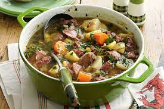

Cawl Recipe

Description
Welsh Cawl is a traditional Welsh dish made with Welsh Lamb (or Beef) and seasonal vegetables such as leeks, swede, onions, cabbage and carrots,
It is typically slow-cooked and served in a meaty broth similar to a stew.
Great for cooler nights,
this vegie-packed favourite makes a hearty meal for the whole family.
Ingredients
- 6 (about 1.8 kg) lamb shanks
- 3L (12 cups) water
- 1 brown onion, halved
- 2 bay leaves
- 1 tsp black peppercorns
- 20g butter
- 200g bacon, rind removed, coarsely chopped
- 1 large leek, pale section only, washed, halved, thickly sliced
- 2 potatoes, peeled, cut into 1.5cm pieces
- 1 large parsnip, peeled, cut into 1.5cm pieces
- 2 carrots, peeled, cut into 1.5cm pieces
- 1 turnip, peeled, cut into 1.5cm pieces
- 750ml (3 cups) Massel chicken style liquid stock
- 6 sprigs fresh thyme
- 1/3 cup chopped fresh continental parsley
Steps
- Place the lamb, water, onion, bay leaves and peppercorns in a large saucepan over medium-high heat. Bring to the boil, skimming the surface with a metal spoon to remove scum. Reduce heat to medium-low. Simmer,
skimming occasionally, for 2 hours or until lamb is tender and falls off the bone.
- Strain the mixture through a fine sieve into a bowl. Reserve stock. Discard onion, bay leaves and peppercorns. Remove the bones and discard. Coarsely chop the lamb. Place in an airtight container. Cover stock with plastic wrap.
Place lamb and reserved lamb stock in the fridge overnight to chill.
- Use a metal spoon to remove fat from the surface of the lamb stock. Discard fat.
- Melt the butter in a large saucepan over medium-low heat. Add the bacon and leek, and cook, stirring often, for 5 minutes or until the bacon is crisp. Add the potato, parsnip, carrot and turnip.
Cook, stirring occasionally, for 5 minutes.
- Add the lamb stock, chicken stock and thyme to the bacon mixture. Reduce heat to low. Cook for 1 hour or until vegetables are very soft. Stir in the lamb. Cook for a further
10 minutes or until lamb is heated through. Season with salt and pepper.
- Stir in the parsley. Ladle the soup among serving bowls.